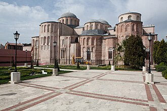

परिचय
Le monastère du Christ Pantocrator est un établissement religieux chrétien fondé à Constantinople au XIIe siècle. Le complexe architectural central a été reconverti en mosquée après la conquête ottomane de 1453 et a pris le nom de mosquée Zeyrek. Représentatif de l'architecture religieuse de l'époque médio-byzantine, c'est après Sainte-Sophie le plus imposant bâtiment religieux d'Istanbul datant d'avant 1453.
جامع زيرك كليسة أو كنيسة زيرك أو دير البانتوكراتور ، هو مسجد كبير في فضيلة سوكايجي في منطقة زيرك في الفاتح في إسطنبول، ويطل على القرن الذهبي. وهي مكونة من كنيستين بيزنطيتين سابقتين وكنيسة صغيرة متصلة معًا وتمثل أفضل مثال على العمارة البيزنطية الوسطى في القسطنطينية. ويعد بعد آيا صوفيا أكبر صرح ديني بيزنطي لا يزال قائما في إسطنبول.
Zeyrek Mosque or the Monastery of the Pantokrator, is a large mosque on the Fazilet Street in the Zeyrek district of Fatih in Istanbul, overlooking the Golden Horn. It is made up of two former Byzantine churches and a chapel joined together and represents the best example of Middle Byzantine architecture in Constantinople. After Hagia Sophia, it is the largest Byzantine religious edifice still standing in Istanbul.
Zeyrek Camii veya Pantokrator Manastırı, İstanbul'un Fatih ilçesine bağlı Fazilet Sokağı'nda Haliç'e bakan büyük bir camidir. İki eski Bizans kilisesi ve birleştirilmiş bir şapelden oluşur ve Konstantinopolis'teki Orta Bizans mimarisinin örneklerinden birini temsil eder. Ayasofya'dan sonra İstanbul'da ayakta kalan en büyük Bizans dinî yapısıdır.
Masjid Zeyrek atau yang awalnya bernama Biara Pantokrator adalah sebuah masjid bersejarah peninggalan Bizantium yang berada di kawasan Fazilet Sokağı, distrik Fatih, Provinsi Istanbul, Turki. Bangunan ini awalnya terdiri dari dua bekas gereja Bizantium dan sebuah kapel yang disatukan, mewakili contoh terbaik arsitektur Bizantium Tengah di Konstantinopel. Setelah Masjid Hagia Sophia, bangunan ini merupakan bangunan keagamaan Bizantium terbesar yang masih berdiri di Istanbul.
Die Zeyrek-Moschee ist eine Moschee in Istanbul. Sie besteht aus einem Gebäudekomplex dreier verbundener ehemaliger orthodoxer Kirchen, bei denen es sich um die Kirchen des ehemaligen Pantokratorkloster handelt. Dieses wurde zwischen 1118 und 1143 unter Johannes II. Komnenos als Grablege errichtet. Neben der Grablege des Johannes befinden sich in der mittleren, dem Erzengel Michael geweihten kaiserlichen Grablege auch die Ruhestätten weiterer komnenischer und palaiologischer Herrschaftsmitglieder und Kaiser von Byzanz. Das Pantokratorkloster bildet den Höhepunkt des Architekturschaffens der komnenischen Epoche im byzantinischen Reich und in Konstantinopel. Besonders kennzeichnend sind in dem nach der Hagia Sophia zweitgrößten religiösen Gebäude, das in Istanbul aus dieser Zeit heute noch erhalten ist, die für die byzantinische Kunst der komnenischen Epoche typischen Umgänge sowie vielkup
La mezquita de Zeyrek es una mezquita situada en Estambul y construida a partir de dos antiguas iglesias ortodoxas y una capilla. Representa el más típico ejemplo de la arquitectura del período intermedio bizantino de Constantinopla y es, después de Santa Sofía, el edificio religioso más grande construido por los bizantinos que aún existe en la ciudad de Estambul.
La moschea di Zeyrek, in precedenza chiesa di Cristo Pantocratore, è una moschea di Istanbul, costituita da tre primitivi edifici sacri ortodossi. Rappresenta uno dei più importanti esempi di architettura bizantina a Costantinopoli ed è, dopo Hagia Sophia, il secondo più grande edificio del periodo Bizantino ancora in alzato.
A Mesquita de Zeyrek, originalmente Igreja ou Mosteiro de Cristo Pantocrator, é uma mesquita em Istambul, Turquia, que nos tempos bizantinos foi um complexo religioso cristão. O conjunto constitui o exemplo mais característico do período médio da arquitetura bizantina e, a seguir à basílica de Santa Sofia, é o maior edifício religioso ainda existente em Istambul. Situa-se no bairro de Zeyrek, distrito de Fatih.
泽伊雷克清真寺 位于土耳其伊斯坦布尔法提赫区，原为东正教的两座教堂和一座小堂，。是伊斯坦布尔现存第二大拜占庭宗教建筑遗址，仅次于圣索菲亚大教堂。
제이렉 모스크(튀르키예어: Zeyrek Camii) 또는 그리스도 판토크라토르 수도원(그리스어: Μονὴ τοῦ Παντοκράτορος Χριστοῦ)은 이스탄불의 중요한 모스크로, 이전에는 동방 정교회의 두 곳의 예배당으로 구성되어 있었다. 판토크라토르 수도원은 콘스탄티누폴리스 비잔티움 중기 건축 양식의 가장 대표적인 사례로, 하기아 소피아에 이어 동로마 제국이 세운 두 번째로 큰 종교 건축물로 아직까지 이스탄불에 남아 있다.
Мечеть Зайрек — представляет собой второй по величине памятник византийского зодчества, сохранившийся от Константинополя.
नक़्शे पर
दस्तावेज़ और लिंक
- Wikipédia — Français
- Wikipédia — العربية
- Wikipédia — English
- Wikipédia — Türkçe
- Wikipédia — Bahasa Indonesia
- Wikipédia — اردو
- Wikipédia — Deutsch
- Wikipédia — Español
- Wikipédia — Italiano
- Wikipédia — Português
- Wikipédia — 中文
- Wikipédia — 한국어
- Wikipédia — Русский
- Wikidata — Q197094
डेटा: विकिडेटा (CC0), हर 3 महीने में अपडेट। वर्ष इमारत के निर्माण की सबसे पुरानी ज्ञात तिथि है: जो इमारत बाद में मस्जिद बनी (जैसे हागिया सोफ़िया), उसके लिए यह मूल इमारत का वर्ष है। तस्वीरें: विकिमीडिया कॉमन्स, लेखक और लाइसेंस हर तस्वीर के पेज पर।